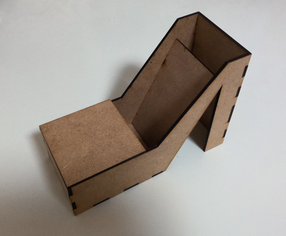

靴型スマホスタンド
デジタルファブリケーション二つ目の課題、レザーカッターを使用した作品作り。今回私は、靴型のスマホスタンドを製作しました。
完成品がこちら

縦向きにも横向きにもスマホを乗せることができます。

スケッチ
最初のスケッチ段階では、完成品とは大分異なるデザインのスタンドでした。納得のいくデザインがなかなか思い浮かばず、しばらく試行錯誤していました。
デザインを考えているなかで、スタンドの形が靴のように見えたことと、
近くにいた友人が「靴型のスマホスタンドだったらほしい」と言ったことがきっかけで今のデザインに決まりました。